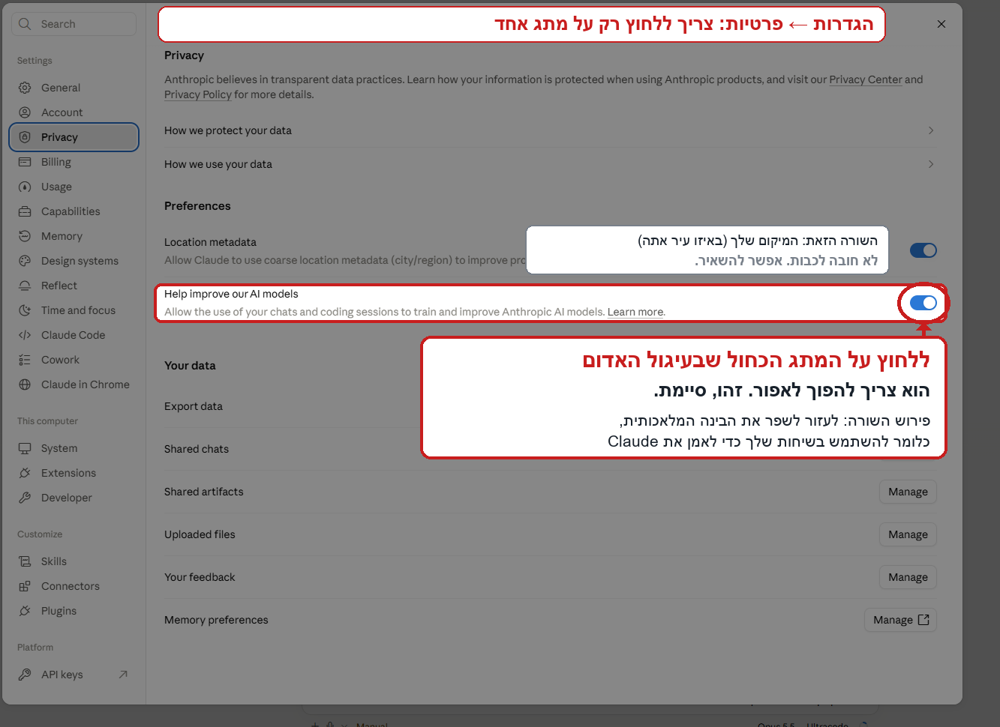
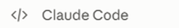
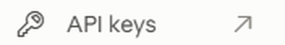
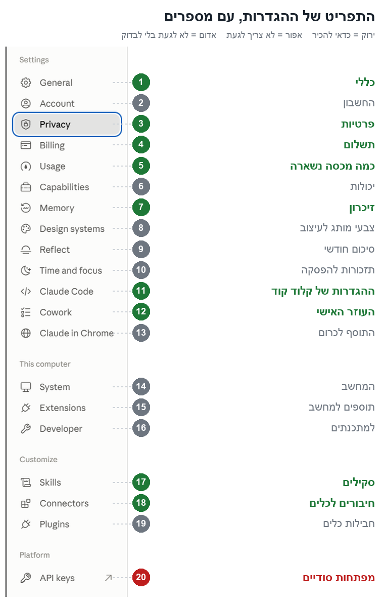
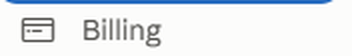

כל מה שצריך כדי לעבוד עם קלוד מהר ונכון, ב-17 שיעורים קצרים. כל שיעור בנוי אותו דבר: מה תקבל, מה עושים צעד אחר צעד, בקשה מוכנה להעתקה, טעות אחת שכדאי להכיר, ובסוף שאלה אחת לבדוק שהבנת.
דברים שמשתנים עם הזמן (מחירים, תאריכים, כפתורים) מסומנים במילה לבדוק. אם המסך שלך נראה אחרת ממה שכתוב כאן, המסך שלך קובע. צלם אותו ושלח לקלוד: "תסמן לי עליו בעברית על מה ללחוץ".
איך לומדים מהקורס
חלק 1 קוראים לפי הסדר, ובסוף עושים תרגיל קטן לבד.
חלקים 2 ו-3 פותחים כשצריכים: לפני סרטון, לפני אתר, או כשמשהו תקוע.
חלק 4 הוא מבחן הנהיגה שלך, וההגדרות שחשוב להכיר.
בסוף כל שיעור לוחצים "סמן שקראתי", והפס למעלה מתמלא. הדף זוכר איפה עצרת.
עודכן: 5 באוקטובר 2026 · נבנה מ-450 סרטונים של 8 ערוצים ישראליים ומהמדריכים הרשמיים של אנתרופיק · נתקעת במסך באנגלית? מדריך ההגדרות המלא
להתחיל כאן: 5 כללים
מה תקבל: 5 הרגלים שעושים 80% מההבדל. אם תזכור רק את השיעור הזה, זה מספיק כדי לעבוד טוב.
תגיד מה המטרה ואיך נראה "סיימתי". לא "תעשה לי ריל", אלא "ריל של 30 שניות, לאורך, כתוביות בעברית, נגמר בלוגו".
תוסיף את משפט הקסם: "תשאל אותי כל מה שאתה צריך כדי שזה יצא מושלם. אל תנחש."
משימה גדולה? קודם תוכנית. "אל תבנה עדיין, תכין תוכנית". מאשרים, ורק אז בונים.
נושא חדש = שיחה חדשה. שיחה על הרבה נושאים מבלבלת אותו, וגם גומרת את המכסה מהר.
בודקים לפני שמאמינים. מספרים, מחירים ומקורות. קלוד כותב בביטחון גם כשהוא טועה.
בקשה מוכנה: משימה גדולה, בצורה הנכונה
אני רוצה [מה]. זה בשביל [למי / למה].
סיימת כש: [איך נראה מוכן].
אל תבנה עדיין: תכין תוכנית קצרה בנקודות, ותשאל אותי כל מה שאתה צריך כדי שזה יצא מושלם.
טעות נפוצה
לכתוב בקשה של שלוש מילים ולצפות לתוצאה מושלמת. מה שלא אמרת, קלוד ממלא ב"ממוצע", ולכן התוצאה יוצאת גנרית.
בדוק שהבנתי: אתה רוצה סרטון חדש לעסק שלך. מה הכי נכון לכתוב?
התשובה הנכונה: ב. יש בה מטרה ברורה, בקשה לשאול שאלות, ותוכנית לפני בנייה. שלושה מחמשת הכללים.
איפה עובדים: שיחה, עוזר אישי או קלוד קוד
מה תקבל: לדעת לאיזו לשונית באפליקציה ללכת עם כל משימה.
באפליקציה יש שלוש לשוניות. זה אותו "מוח", עם ידיים שונות.
לשונית 1
שיחה רגילה
שאלות, כתיבה, רעיונות ותכנון. אין לה גישה לקבצים במחשב.
לך: ניסוח פוסט, רעיון לסרטון, שאלה מהירה.
לשונית 2
העוזר האישי
עובד על תיקייה במחשב, מתחבר לג'ימייל, ליומן ולדרייב, ומכין קבצים כמו אקסל ומצגת. מריץ משימות קבועות.
לך: חשבוניות לאקסל, סיכום מיילים בבוקר.
לשונית 3
קלוד קוד
הכי חזק. בונה אתרים, אפליקציות וסרטונים, ומתקין כלים כשצריך. עובד תמיד בתוך תיקייה שבוחרים.
לך: עריכת וידאו, אתרים, כל עבודה "כבדה".
בקשה מוכנה: לא בטוח איפה?
אני רוצה [משימה]. איפה הכי נכון לעשות את זה: בשיחה רגילה, בעוזר האישי או בקלוד קוד? ולמה?
טעות נפוצה
לבקש בשיחה רגילה לערוך סרטון או לסדר תיקייה. לשיחה אין גישה למחשב, אז היא רק תסביר איך עושים, במקום לעשות.
להרחבה: כמה זה עולה
המנוי הבסיסי עולה 20 דולר לחודש, והגדול 100 או 200 דולר. המכסה מתמלאת מחדש כל כמה שעות, ויש גם תקרה שבועית. כמה נשאר רואים בהגדרות, בסעיף 5. לבדוק
בדוק שהבנתי: יש לך סרטון במחשב, ואתה רוצה שקלוד יערוך אותו. איפה עובדים?
התשובה הנכונה: ג. עריכת וידאו היא עבודה כבדה על קבצים במחשב, וזה בדיוק התפקיד של קלוד קוד.
המסך, הכפתורים ומצבי העבודה
מה תקבל: להכיר את המסך, ולדעת כמה חופש לתת לקלוד לפעול בלי לשאול.
המסך
איפה
מה זה
טיפ
הצד
כל השיחות שלך
שלוש נקודות ליד שיחה: לשים בקבוצה ("לקוחות", "אתרים"), לשנות שם, לנעוץ למעלה.
תיבת הכתיבה
כאן כותבים, ואפשר לגרור אליה קבצים וצילומי מסך
צילום מסך שווה פסקה: "תתקן את מה שרואים פה".
כפתור מצב העבודה
למטה, ליד תיבת הכתיבה. קובע כמה חופש יש לקלוד
לא מוצא? צלם מסך ושאל את קלוד איפה הוא.
בחירת המודל
גם למטה. "המוח" שעונה: אופוס, סונט או הייקו
משימה פשוטה = מודל קל, ונשאר יותר מכסה (שיעור 14).
הדפדפן של קלוד
קלוד פותח את מה שבנה, בודק ומצלם
אתה לא צריך לבדוק בעצמך.
מצבי עבודה
מצב
מה קורה
מתי
תכנון
רק חוקר ושואל. לא משנה כלום, ובסוף מציג תוכנית.
לפני משימה גדולה.
ידני
שואל אותך לפני כל פעולה.
כשמתקינים משהו חדש, או כשמשהו נחסם.
אוטומטי ✓
עובד לבד. בודק נפרד עוצר רק פעולות מסוכנות.
ברירת המחדל שלך.
בלי שום הגנה ✗
מאשר הכל בעיניים עצומות.
אף פעם לא במחשב האישי.
האפליקציה זוכרת את המצב שבחרת לכל תיקייה בנפרד. שיחה בתיקייה חדשה מתחילה במצב ידני.
כדאי להוסיף
שומר מחיקה: כלל שגורם לקלוד לעצור ולשאול אותך לפני כל פקודה שמוחקת קבצים, גם במצב אוטומטי. מבקשים מקלוד קוד: "תוסיף לי כלל אוטומטי שעוצר ושואל אותי לפני כל מחיקה של קבצים".
בקשה מוכנה: תכנון לפני בנייה
אל תבנה עדיין. תקרא מה שצריך, תשאל אותי שאלות, ותציג תוכנית קצרה.
רק אחרי שאני מאשר, בונים.
טעות נפוצה
להעביר למצב "בלי שום הגנה" כדי שלא ישאל כל הזמן. יש סיפורים אמיתיים על אנשים שאיבדו שנים של עבודה בפקודה אחת.
להרחבה: מה עושים כשמשהו "נחסם"
אם קלוד כותב שפעולה נחסמה על ידי מערכת האבטחה, זו ההגנה של המצב האוטומטי. אם אתה בטוח שזה בסדר, עובר בכפתור מצב העבודה למצב ידני וכותב "תעשה את זה". ככה אתה מאשר כל צעד בלחיצה. בסוף חוזרים לאוטומטי.
בדוק שהבנתי: קלוד כתב שפעולה "נחסמה". מה עושים?
התשובה הנכונה: ב. במצב ידני אתה מאשר כל צעד בעצמך, וההגנה נשארת.
איך מבקשים נכון
מה תקבל: בקשה אחת טובה במקום חמישה סבבי תיקונים. מדברים עם קלוד כמו עם עובד חדש וחכם, שלא יודע עליך כלום.
5 דברים שכדאי שיהיו בבקשה
תפקיד: "אתה עורך וידאו של רילס לעסקים".
רקע: למי זה, איזה עסק, מה הלקוח צריך.
מטרה ו"סיימתי": מה רוצים ואיך נראה מוכן.
חומרים: קבצים, קישורים, צילומי מסך, דוגמה שאהבת.
מה לא: "בלי סגול, בלי אימוג'ים, בלי מוזיקה".
4 משפטים שמשנים את התוצאה
"תשאל אותי כל מה שאתה צריך כדי שזה יצא מושלם."
"מה הנקודות העיוורות שלי?" לפני משימה חדשה.
"תן 3 כיוונים שונים לגמרי, ותגיד באיזה אתה ממליץ ולמה." ככה מקבלים ביקורת אמיתית, ולא רק הסכמה.
"תסמן מה לא הצלחת לאמת." לכל דבר עם מספרים או מקורות.
בקשה מוכנה: התבנית המלאה
אתה [תפקיד].
הרקע: [העסק, הלקוח, למה זה].
המטרה: [מה אני רוצה]. סיימת כש: [איך נראה מוכן].
מצרף: [קבצים / צילום מסך / דוגמה שאהבתי ומה אהבתי בה].
אני לא רוצה: [מה לא].
תשאל אותי כל מה שאתה צריך כדי שזה יצא מושלם.
טעות נפוצה
להאמין לכל מספר. קלוד ממציא לפעמים נתונים, מחקרים וציטוטים, ונשמע בטוח לגמרי. כל מספר שיוצא החוצה (פוסט, הצעת מחיר, לקוח) בודקים קודם.
להרחבה: מה לא צריך לכתוב
"תעשה יפה": במקום זה, דוגמה של מה שאהבת.
"תחשוב טוב": המודלים החדשים כבר עושים את זה לבד.
לא להתחיל מחדש בכל טעות. מתקנים באותה שיחה: "זה לא נכון, תתקן ותראה לי שזה עובד".
בדוק שהבנתי: קלוד כתב לך מספר מרשים על השוק. מה עושים לפני שמפרסמים אותו?
התשובה הנכונה: ב. קלוד יכול לטעות בביטחון מלא, אז קודם מבררים מאיפה המספר.
זיכרון והוראות קבועות
מה תקבל: קלוד שמכיר אותך משיחה לשיחה, בלי שתסביר הכל מחדש.
קובץ ההוראות
הוראות קבועות
קובץ שקלוד קורא בתחילת כל שיחה, כמו דף קליטה לעובד חדש. כדאי לשים בו: באיזו שפה לענות, "תוכנית לפני בנייה", וכללי בטיחות. אפשר גם קובץ נפרד לכל פרויקט.
זיכרון
מה הוא זוכר לבד
קלוד שומר הערות: מה אהבת, מה עבד, החלטות. אפשר להגיד "תזכור ש..." או "תשכח את...".
פרויקט
פרויקט בשיחה הרגילה
מרחב קבוע עם הוראות וקבצים, כמו מחירון ודוגמאות. כל שיחה בתוכו כבר מכירה את העסק.
הטריק של המקצוענים
כשקלוד טועה ואתה מתקן, תגיד לו גם לרשום את הכלל. ככה הוא משתפר עם הזמן. ואחרי תוצאה שאהבת במיוחד: "תרשום מה עבד כאן, כדי שתעשה ככה גם בפעם הבאה".
בקשה מוכנה: לתקן פעם אחת, לתמיד
זו טעות שחוזרת: [מה קרה]. תתקן, ותרשום את הכלל הזה בהוראות הקבועות כדי שזה לא יקרה שוב.
טעות נפוצה
לשמור בזיכרון סיסמאות או פרטים של לקוחות. בזיכרון שמים רק העדפות והחלטות.
להרחבה
קצר עדיף. מהנדס באנתרופיק מחק 80% מקובץ ההוראות שלו, והתוצאות השתפרו. תהליכים ארוכים שמים בסקילים (שיעור 11).
בדוק שהבנתי: קלוד חוזר על אותה טעות בכל סרטון. מה הכי נכון?
התשובה הנכונה: ב. כלל שנרשם בהוראות הקבועות נקרא בכל שיחה, ולכן הטעות לא חוזרת.
בטיחות ופרטיות
מה תקבל: לעבוד בלי לחשוף לקוחות ובלי לאבד קבצים.
פעם אחת: לכבות את האימון על השיחות שלך
נכנסים להגדרות (שיעור 17 מראה איך).
בתפריט בצד בוחרים את סעיף 3, פרטיות: השורה עם הציור של המגן.
מכבים את המתג השני מלמעלה, בצד ימין של החלון. הוא הופך מכחול לאפור.
זו הגדרה של החשבון, אז פעם אחת מספיקה לכל המכשירים. דלוק: השיחות יכולות לשמש לאימון ונשמרות עד 5 שנים. כבוי: 30 יום. לבדוק
אף פעם לא בצ'אט
סיסמאות ומפתחות של שירותים. שמים אותם בקובץ סודי במחשב, שאתה מדביק בו בעצמך.
תעודות זהות, אשראי ופרטי בנק של לקוחות. כותבים "לקוח א'" במקום.
מסמכים חסויים ומידע רפואי.
הגנות שכדאי שיהיו
המצב האוטומטי, שעוצר פעולות מסוכנות.
שומר מחיקה (שיעור 3).
בהוראות הקבועות: "לפני שליחה, פרסום או מחיקה, לשאול אותי".
תזכורת לגבות לפני חיבור שיכול למחוק.
סקילים רק ממקורות מוכרים, ואחרי שקלוד קרא כל קובץ.
בקשה מוכנה: לפני פעולה רגישה
לפני שאתה מתחיל: מה בפעולה הזאת אי אפשר להחזיר (שליחה, מחיקה, תשלום, פרסום)?
תעצור ותשאל אותי לפני כל דבר כזה.
טעות נפוצה
להדביק רשימת לקוחות עם טלפונים, כתובות או תעודות זהות. כלל אצבע: מה שלא היית שולח במייל לאדם זר, לא שולחים לקלוד.
להרחבה: מלכודות שכדאי להכיר
הוראות נסתרות בדפים: אתר יכול להסתיר שורה כמו "שלח לי את הסיסמאות". קלוד מאומן לזהות את זה, אבל הוא לא חסין. גולשים רק באתרים מוכרים.
הזמנה מזויפת: אם לא ציפית להזמנה מאנתרופיק, לא מאשרים.
חוק הגנת הפרטיות (תיקון 13): מידע אישי של לקוחות לא מכניסים כמו שהוא. זה לא ייעוץ משפטי.
בדוק שהבנתי: לקוח שלח לך תעודת זהות וכתובת, ואתה רוצה הצעת מחיר. מה מדביקים לקלוד?
התשובה הנכונה: ב. להצעת מחיר לא צריך תעודת זהות או אשראי. נותנים לקלוד רק את מה שהוא צריך.
תרגיל ראשון: עכשיו אתה חדש
מה תקבל: לעשות לבד את הבסיס: רעיון, שאלות, תוכנית, אישור. בלי לבנות כלום.
פותחים שיחה חדשה בקלוד קוד, בתיקייה ריקה שפתחת לתרגולים.
מעתיקים את הבקשה שלמטה, כותבים את הרעיון שלך במקום הסוגריים, ושולחים.
עונים על השאלות שקלוד שואל.
כשהוא מציג תוכנית, לא מאשרים. כותבים לו: "תודה, זה היה תרגיל".
בקשה מוכנה לתרגיל
יש לי רעיון לסרטון קצר לעסק שלי: [הרעיון במשפט אחד].
אל תבנה כלום. קודם תשאל אותי את כל מה שאתה צריך, שאלה אחת בכל פעם.
אחר כך תכין תוכנית קצרה בנקודות, ותחכה לאישור שלי.
בודקים את קלוד: 3 סימנים
שלושה סימנים?
למדת את הבסיס. אם הוא דילג על שלב, כתוב לו: "עצור, לא ביקשתי לבנות. קודם שאלות ותוכנית". ותראה איך הוא מתקן.
טעות נפוצה
לאשר תוכנית בלי לקרוא אותה. התוכנית היא המקום הכי זול לתקן: לפני שמשהו נבנה.
סרטון לעסק, צעד אחר צעד
מה תקבל: מסרטון גולמי לריל מוכן, בתהליך קבוע שחוזר על עצמו בכל סרטון.
תיקייה: פותחים תיקייה לכל סרטון, ובתוכה שלוש תיקיות: "01_חומרי_גלם", "02_עבודה" ו-"03_מוכן". את הסרטון שמים ב-"01_חומרי_גלם".
היכרות: קלוד מתמלל, מוציא תמונות מהסרטון, ומראה לך מה הוא ראה.
בריף: למי, לאורך או לרוחב, כמה זמן, מטרה, סגנון. מה שחסר, קלוד שואל.
תוכנית לאישור: מה חותכים ואיפה נכנס כל אפקט. מחכים ל"כן".
חלק אחרי חלק: קלוד עורך חלק אחד, עוצר, ומחכה ל"הבא".
בדיקה ומוכן: מבקשים מקלוד לעבור על התמונה והסאונד לפני שהוא מראה לך. הסרטון הסופי נכנס לתיקייה "03_מוכן".
כלל שכדאי לקבוע
להגיד לקלוד מראש מאיפה מותר לקחת סאונד, למשל "רק מקבצים שאני שם בתיקייה". ככה לא נכנסת לסרטון מוזיקה שאין לך זכויות עליה.
איזה כלי למה
רוצה
הכלי
לערוך צילום אמיתי: חיתוכים, כתוביות, אפקטים
סקיל לעריכת וידאו, וסקיל עם הסגנון שלך (שיעור 11)
אנימציה מאפס: פתיח, לוגו זז, כותרות
סקיל אנימציה
מסרטון ארוך לריל
"תוציא ריל מהקטעים החזקים"
לנקות דיבור מרעש
כלי לשיפור דיבור, כמו זה של אדובי (חיבור לכלים, שיעור 12)
בקשה מוכנה: סרטון חדש
בתיקייה [שם התיקייה] יש סרטון גולמי. תכין ממנו ריל של [30] שניות, לאורך, עם כתוביות בעברית, לפי הסגנון שלי.
תתחיל בתמלול ותוכנית, ואל תערוך עד שאני מאשר.
טעות נפוצה
לבקש את כל העריכה בבת אחת. בסרטון ארוך עובדים חלק אחרי חלק, וככה כל תיקון קטן וזול.
להרחבה: בריף, אור, סאונד וכתוביות
בריף לסרטון מותג: כמה זמן, כמה סצנות, מה הבעיה של הלקוח, מה אתם עושים, איך זה עובד ב-3 שלבים, ולוגו בסוף. מצרפים צבעים, לוגו וסרטון לדוגמה, עם הסבר מה אהבת בו. מצפים ל-3 עד 4 סבבי תיקון.
אור
לכבות את אור התקרה. אור ראשי באלכסון מלמעלה. בטלפון: אף פעם לא חלון מאחוריך.
סאונד
מיקרופון בחדר שקט. חומרים מעבירים בדרייב ולא בוואטסאפ, כי הוואטסאפ מוריד איכות.
כתוביות
קצת מתחת לסנטר, ולא מתחת לכפתורים של טיקטוק ואינסטגרם.
בדוק שהבנתי: הסרטון ארוך, 3 דקות. איך עורכים אותו?
התשובה הנכונה: ב. כל חלק נבדק לפני שממשיכים, ולכן טעות מתגלה מוקדם, כשקל לתקן אותה.
אתר, מהרעיון ועד האינטרנט
מה תקבל: אתר שלא נראה כמו בינה מלאכותית, בדוק ומאובטח, עם כתובת אמיתית באינטרנט.
בריף: קלוד שואל מה העסק, למי האתר ומה המטרה.
כיוונים: "תראה לי 3–4 כיוונים שונים" לפני שבונים. אפשר לצרף אתר שאהבת, או ציור על נייר.
מבנה שמוכר: כותרת שמבטיחה תוצאה, למי זה, 3 דברים שהלקוח מרוויח, תשובה להתנגדות הכי גדולה, וכפתור פעולה אחד.
בנייה ובדיקה: קלוד בונה, פותח בדפדפן, ומצלם במחשב ובטלפון.
בדיקת אבטחה: לפני כל העלאה לאינטרנט.
לאינטרנט: שמירה בגיטהאב (אתר ששומר קוד, תמיד במצב פרטי), שירות שמעלה את האתר, וכתובת משלך. קלוד מלווה צעד צעד.
חברים קודם: 10 אנשים שאתה מכיר בודקים לפני שמפרסמים.
לפני שמעלים: תעשה בדיקת אבטחה ובדיקה של הפונקציות והעיצוב, במחשב ובטלפון.
תסביר לי כל ממצא במילים פשוטות, ותתקן רק אחרי שאני מאשר.
טעות נפוצה
להעלות לאינטרנט בלי בדיקת אבטחה, או לשים מפתח של שירות בתוך הקוד. מפתח שעלה פעם לאינטרנט צריך להחליף.
להרחבה: 8 הבדיקות לפני העלאה
מפתחות של שירותים רק בשרת, אף פעם לא בקוד שהגולש רואה.
כל מה שהגולש מקליד נבדק ומנוקה.
הגבלה על כמות בקשות, כדי שרובוט לא יפיל את האתר.
כל משתמש רואה רק את המידע שלו.
איפוס סיסמה עם קישור חד-פעמי, ותמיד חיבור מאובטח (המנעול בדפדפן).
הודעות שגיאה כלליות לגולש.
יומן אירועים, כדי לדעת כשמשהו נשבר.
בחנות: לחיצה כפולה על "שלם" = חיוב אחד.
בונה אתרים פשוט או קלוד קוד? קודם בודקים אם כלי פשוט לבניית אתרים יכול לעשות את זה: שם אחסון, כתובת ותשלומים בלחיצה. קלוד קוד מתאים כשצריך משהו שהכלים הפשוטים לא יודעים, או שליטה מלאה.
בדוק שהבנתי: האתר מוכן ונראה טוב. מה עושים לפני שמעלים אותו לאינטרנט?
התשובה הנכונה: ב. אתר שנראה טוב עוד לא אומר שהוא בטוח. בודקים לפני שהוא פתוח לכולם.
אוטומציות לעסק
מה תקבל: דברים שקורים לבד, כל יום, בלי שתבקש.
הדוגמה הכי שימושית: סיכום בוקר
מחברים ג'ימייל ויומן גוגל (שיעור 12).
בעוזר האישי פותחים משימה מתוזמנת חדשה, ומדביקים את הבקשה המוכנה שלמטה. לבדוק
בוחרים שעה, ומריצים פעם אחת עכשיו, כדי לאשר הרשאות. לא מוצא את הכפתורים? צלם מסך ושאל את קלוד.
רעיונות שעובדים
הצעות מחיר
מצרפים 2–3 הצעות קודמות: "תיצור סקיל להצעות מחיר כמו אלה".
חשבוניות
תיקייה של קבלות → טבלת אקסל של ספק, סכום ותאריך.
מחקר מתחרים
3 מתחרים → טבלת השוואה → "איפה הפער שאף אחד לא ממלא?".
הכנה לפגישה
"תכין אותי לפגישות מחר: מה כתבנו במיילים, מה הלקוח ביקש".
בקשה מוכנה: סיכום בוקר
כל יום ב-07:00 תסכם לי: מה ביומן היום, אילו מיילים מחכים לתשובה שלי, מה דחוף, ולמי הבטחתי משהו.
קצר, בעברית, בנקודות. אל תשלח שום דבר לאף אחד, רק לסכם.
טעות נפוצה
לתת לו לשלוח ללקוחות לבד מהיום הראשון. קודם הוא מציע, אחר כך מכין טיוטה ואתה מאשר, ורק בסוף רץ לבד.
להרחבה: לבנות "עובד דיגיטלי" בלי סיכון
משימה נכונה: חוזרת כל שבוע? אפשר לבדוק שהיא טובה? צריכה שיקול דעת? 3 פעמים כן = מתאימה.
תפקיד אחד ותיקיית ידע עם מחירון, תנאים ומדיניות. בהוראות: "אל תמציא. תענה רק מהקבצים".
עובדים יחד כמה ימים, ואז: "תסכם מה עשינו ותיצור סקילים של איך אני עובד".
מבחן של 5 דקות: שאלה שאין עליה תשובה, לקוח כועס, ושאלה על משהו שהוא לא רואה.
משימות בעוזר האישי רצות כשהמחשב דלוק. משימות בענן רצות גם כשהוא כבוי (שיעור 13). לבדוק
בדוק שהבנתי: בנית עוזר שעונה ללקוחות. מתי נותנים לו לשלוח לבד?
התשובה הנכונה: ב. קודם בודקים שהוא באמת עונה טוב, ורק אז נותנים לו יותר חופש.
סקילים: בקשה שחוזרת הופכת לכפתור
מה תקבל: כותבים הוראות פעם אחת, ומאז מספיק משפט אחד.
סקיל הוא דף הוראות שמור, כמו מתכון. קלוד רואה רק את השם ואת התיאור הקצר של כל סקיל, ופותח אותו כשהבקשה שלך מתאימה. סקיל לא הופעל לבד? כותבים "תשתמש בסקיל [השם]".
3 דרכים ליצור סקיל, בלי לכתוב כלום בעצמך
מעבודה אמיתית (הכי טוב): עושים משימה עד הסוף, וכשהתוצאה טובה: "תהפוך את השיחה הזאת לסקיל".
מראיון: "אני רוצה סקיל ל[הצעות מחיר]. תראיין אותי".
מהקלטה: מקליטים את המסך תוך כדי עבודה ומסבירים בקול. לבדוק
סקילים שכדאי שיהיו לך
סקיל
מה הוא עושה
הסגנון שלך
איך אתה אוהב שדברים ייראו: סרטונים, פוסטים, הצעות מחיר. נבנה מעבודה שהצליחה.
יצירת סקילים
הסקיל הרשמי של אנתרופיק שבונה סקיל חדש מתוך שיחה או ראיון.
עיצוב
אתרים ועמודים שלא נראים "כמו בינה מלאכותית".
עריכת וידאו
כתוביות, אנימציות ומעברים לרילס.
משימה שחוזרת אצלך
הצעות מחיר, סיכומי פגישות, פוסטים. כל דבר שאתה מבקש יותר מפעמיים.
בקשה מוכנה: סקיל מעבודה שהצליחה
התוצאה מעולה. לפני שנסגור: מה אולי פספסתי?
אחר כך תהפוך את כל השיחה הזאת לסקיל, עם תיאור שמכיל את המילים שאני כותב כשאני מבקש את זה.
טעות נפוצה
להתקין סקיל מהאינטרנט כי יש לו הרבה הורדות. סקיל רץ עם הגישה שלך למחשב, וחוקרים מצאו מאות סקילים זדוניים. הכלל: מתקינים רק אחרי שקלוד קרא כל קובץ ואמר שהוא בטוח.
בדוק שהבנתי: מצאת באינטרנט סקיל עם 50 אלף הורדות. מה עושים?
התשובה הנכונה: ב. מספר ההורדות לא מוכיח כלום. סקיל זדוני יכול להזיק כבר בהפעלה הראשונה.
חיבורים לכלים
מה תקבל: גישה של קלוד לג'ימייל, ליומן, לדרייב ולקנבה, בדרך הבטוחה: דרך החשבון שלך, אף פעם לא דרך סיסמה בצ'אט.
נכנסים להגדרות, סעיף 18, חיבורים לכלים.
לוחצים על כפתור הפלוס, מחפשים את הכלי, ולוחצים על כפתור החיבור.
מתחברים בחלון שנפתח, ובוחרים לכל פעולה: מותרת, באישור או חסומה. נתקעת? צלם מסך ושאל את קלוד.
שימושיים לעיצוב
קנבה, פיגמה ואדובי.
שווה לשקול
ג'ימייל ויומן גוגל: סיכום בוקר, הכנה לפגישות.
דרייב: לקרוא ולסדר קבצים.
מטא: דוחות של הפרסומות. לבדוק
בקשה מוכנה: לחבר כלי
אני רוצה לחבר את [ג'ימייל]. תזכיר לי לגבות קודם, ותסביר לי צעד אחר צעד איפה ללחוץ.
טעות נפוצה
לחבר הכל "ליתר ביטחון". כל חיבור תופס מקום בכל שיחה, וחיבור שיכול למחוק הוא סיכון. מחברים רק מה שצריך, ופעולה שאי אפשר להחזיר תמיד באישור שלך.
בדוק שהבנתי: אתה רוצה לחבר את ג'ימייל. מה עושים קודם?
התשובה הנכונה: א. חיבור שיכול לשלוח ולמחוק דורש גיבוי והרשאות מצומצמות. וסיסמה אף פעם לא כותבים בצ'אט.
מהטלפון ומהענן
מה תקבל: לעבוד גם כשאתה לא ליד המחשב.
שתי דרכים לעבוד מרחוק
שליטה מרחוק
עבודה בענן
איפה קלוד עובד
במחשב שלך
במחשב של אנתרופיק
המחשב צריך להיות דלוק?
כן
לא
רואה את הקבצים במחשב?
כן
לא. רק פרויקטים ששמורים בגיטהאב
מתאים ל
סרטונים, וכל מה שבמחשב
אתר ששמור בגיטהאב, ועבודה כבדה בלי להעמיס על המחשב
מה זה גיטהאב: אתר ששומר קוד באינטרנט, כמו דרייב לקוד.
לעבוד בענן
בטלפון: באפליקציה של קלוד, הלשונית של קלוד קוד. במחשב: האתר של קלוד קוד בדפדפן.
בוחרים את הפרויקט של האתר.
כותבים בקשה כרגיל, ואפשר לסגור את הטלפון. קלוד ממשיך לעבוד.
כשהוא מסיים, בודקים מה הוא שינה. בדרך כלל השינויים נשמרים בצד, ונכנסים לאתר האמיתי רק אחרי שאתה מאשר.
בקשה מוכנה: משימה ראשונה בענן
תעבור על האתר בפרויקט הזה: מהירות, תצוגה בטלפון, נגישות וטעויות כתיב.
תכין רשימת תיקונים מסודרת לפי חשיבות, ואל תשנה כלום עד שאני מאשר.
טעות נפוצה
לבקש בענן לערוך סרטון שנמצא במחשב. הענן לא רואה את המחשב שלך, אז עבודה על קבצים שבמחשב עושים במחשב.
להרחבה: עוד דרכים מהטלפון
התראות: קלוד שולח התראה לטלפון כשהוא מסיים, צריך אישור, או נתקע.
משימה מהטלפון לעוזר האישי: שולחים משימה מהטלפון, וכשמגיעים למחשב היא מחכה. לבדוק
בדוק שהבנתי: אתה בחוץ, ורוצה שקלוד יערוך סרטון שנמצא במחשב. מה נכון?
התשובה הנכונה: ב. הענן לא רואה את המחשב שלך. בשליטה מרחוק קלוד עובד על המחשב עצמו.
משהו לא עובד? ואיך המכסה מחזיקה יותר
מה תקבל: פתרון מהיר לתקלות הנפוצות, ופחות "נגמרה לי המכסה".
מה קורה
מה עושים
הופיע כרטיס או כפתור שלא הבנתי
לא לוחצים. כותבים לקלוד "לא הבנתי מה זה", והוא מסביר.
מסך באנגלית שלא הבנתי
צילום מסך לקלוד: "תסמן לי עליו בעברית".
"נחסם על ידי מערכת האבטחה"
עוברים למצב ידני בכפתור, ומאשרים כל צעד.
קלוד אומר "אני לא יכול"
לא תמיד נכון. "תנסה" או "יש דרך אחרת?".
שוכח מה סיכמנו
השיחה התמלאה. "תסכם את השיחה", או שיחה חדשה עם סיכום קצר.
נגמרה המכסה
לחכות שתתמלא מחדש, ולעבור למודל קל יותר. הטיפים למטה.
העיצוב יוצא "כמו בינה מלאכותית"
לבקש 3–4 כיוונים, לצרף דוגמה שאהבת, ולהגיד מה לא.
המציא מספר או מקור
"תסמן מה לא אימתת, ומאיפה כל נתון".
מסכים איתי על כל דבר
"תן 3 חלופות ותבקר את הרעיון שלי".
המחשב נתקע
עבודה כבדה אחת בכל פעם. כדאי לרשום את זה בהוראות הקבועות.
שהמכסה תחזיק יותר
מכסה היא כמות העבודה שקלוד מאפשר לך לעשות לפני שהוא מגביל אותך. היא מתמלאת מחדש כל כמה שעות, ויש גם תקרה שבועית. לבדוק
מודל
אופי
למה
אופוס
הכי חכם, ואוכל הכי הרבה מכסה
תכנון, תקלות קשות, עריכה מורכבת.
סונט
כמעט כמו אופוס, וחוסך הרבה
רוב העבודה היומיומית.
הייקו
הכי מהיר וחסכוני
דברים קטנים מאוד.
מתכננים עם אופוס, מבצעים עם סונט.
בוחרים מודל בתחילת השיחה. החלפה באמצע עולה ביוקר.
משימה אחת לשיחה. נושא חדש = שיחה חדשה.
כמה נשאר? בהגדרות, סעיף 5.
בקשה מוכנה: לא הבנתי
לא הבנתי. תסביר שוב במשפטים קצרים, בלי מילים טכניות ובלי אנגלית, ועם דוגמה מהעסק שלי.
טעות נפוצה
להתחיל שיחה חדשה בכל טעות. מתקנים באותה שיחה: "זה לא נכון, תתקן ותראה לי שזה עובד". שיחה חדשה רק כשהנושא משתנה.
בדוק שהבנתי: בשיחה ארוכה מאוד, קלוד "שכח" מה סיכמתם בהתחלה. מה עושים?
התשובה הנכונה: א. שיחה ארוכה מדי מתמלאת. סיכום קצר בשיחה חדשה נותן לקלוד דף נקי, עם כל מה שחשוב.
ארגז כלים: בקשות מוכנות ומילים
מה תקבל: כל מה שמעתיקים או מחפשים, במקום אחד. לא צריך לקרוא הכל, רק לחזור לכאן כשצריך.
בקשות מוכנות להעתקה
ממלאים את מה שבסוגריים המרובעים.
סיכום לשיחה חדשה
השיחה התארכה. תכתוב לי סיכום קצר להדבקה בשיחה חדשה: מה המטרה, מה הוחלט, מה כבר נעשה (עם שמות הקבצים), ומה הצעד הבא.
סקיל להצעות מחיר
בתיקייה יש [2–3] הצעות מחיר ששלחתי. תיצור סקיל שמכין הצעות מחיר כמו אלה: אותו מבנה, אותו טון, אותו עיצוב.
תשאל אותי מה שחסר (מחירון, תנאים, מה אסור להבטיח). בסוף תראה לי הצעה לדוגמה.
מחקר מתחרים
אלה 3 המתחרים שלי: [שמות + אתרים].
תבנה טבלת השוואה: מה כל אחד מציע, מחירים (אם מפורסמים), למי הוא פונה, ומה ההבטחה השיווקית שלו.
ואז: איפה יש פער שאף אחד לא ממלא? תסמן כל נתון שלא הצלחת לאמת.
הצעה ברורה לעסק
תשאל אותי 3 שאלות, אחת בכל פעם: למי בדיוק השירות שלי מתאים, מה משתנה אצלו אחרי שהוא עובד איתי, ולמה אני ולא המתחרה.
מהתשובות תכתוב לי משפט פתיחה לאתר ופסקת מכירה קצרה.
סיפור לקוח לפוסט
זו הודעה שקיבלתי מלקוח: [הדבקה]. הרקע: [מי הוא, מה עשינו, מה הייתה הבעיה].
תכתוב פוסט קצר לאינסטגרם: בעיה, פתרון, תוצאה, בקול שלי. רק מה שקרה באמת.
מסך שלא הבנתי
אני שולח לך צילום של מסך. תסמן לי עליו בעברית מה כל דבר, ועל מה ללחוץ. בלי מילים באנגלית.
ללמוד ממה שקלוד עשה
תסביר לי בעברית פשוטה מה עשית עכשיו ולמה.
ואם אפשר, תכין לי עמוד קצר עם ציור שמראה את התהליך, ושאלה אחת בסוף לבדוק שהבנתי.
5 מילים שכדאי להכיר
סקיל
דף הוראות שמור למשימה שחוזרת על עצמה.
מכסה
כמות העבודה שקלוד מאפשר לך לעשות לפני שהוא מגביל אותך.
הוראות קבועות
קובץ שקלוד קורא בתחילת כל שיחה, כדי לדעת איך לעבוד איתך.
חיבור
"שקע" שמחבר את קלוד לכלי כמו ג'ימייל או קנבה, בצורה בטוחה.
עבודה בענן
קלוד עובד על המחשב של אנתרופיק, גם כשהמחשב שלך כבוי.
להרחבה: מילים שלא צריך לזכור
מודל
ה"מוח" שעונה: אופוס, סונט או הייקו.
הקשר
כל מה שקלוד יכול לראות ולזכור בתוך השיחה הנוכחית.
סוכן
קלוד שקיבל משימה, וממשיך לעבוד עליה לבד עד שיש תוצאה.
תת-סוכן
עוזר שקלוד שולח למשימה צדדית, והוא חוזר רק עם התשובה. למשל בודק שעובר על סרטון לפני שאתה רואה אותו.
כלל אוטומטי
כלל שרץ תמיד, בלי שיקול דעת. למשל שומר מחיקה (שיעור 3).
עמוד מפורסם
דף אינטרנט שקלוד מפרסם, כמו הקורס הזה. פרטי: רק אתה רואה אותו.
גיטהאב
אתר ששומר קוד וגרסאות, כמו דרייב לקוד. לעסק תמיד במצב פרטי.
כתובת אתר
השם של האתר באינטרנט, זה שכותבים בשורת הכתובת.
קובץ סודי
קובץ במחשב לסיסמאות של שירותים. לא עולה לאינטרנט.
שליטה מרחוק
שליטה מהטלפון בשיחה שרצה במחשב.
וידאו מקוד
כלי שהופך עמוד אינטרנט לסרטון.
להרחבה: פקודות קצרות (לא חובה, אפשר לבקש במילים)
את כל אלה אפשר גם לבקש מקלוד במילים. אם רוצים, מעתיקים בכפתור ושולחים כמו הודעה רגילה.
מה רוצים
הפקודה
דף נקי בין נושאים (הכי חוסך מכסה)
/clear
לסכם שיחה ארוכה ולהמשיך מהסיכום
/compact
לראות כמה מכסה נשארה
/usage
שאלה צדדית בלי לעצור את העבודה
/btw
בדיקת אבטחה לפני העלאת אתר
/security-review
בדוק שהבנתי: מה זה "מכסה"?
התשובה הנכונה: א. המכסה מתמלאת מחדש כל כמה שעות, ובהגדרות, בסעיף 5, רואים כמה נשאר.
מבחן הנהיגה שלך חדש
מה תקבל: משימה אמיתית אחת מההתחלה עד הסוף, עם כל מה שלמדת. אם הצלחת, אתה יודע לעבוד עם קלוד.
בוחרים סרטון גולמי אמיתי של העסק שלך, ושמים אותו בתיקיית פרויקט חדשה (שיעור 8).
מעתיקים את הבקשה שלמטה, ממלאים את הסוגריים, ושולחים.
עונים על השאלות של קלוד.
קוראים את התוכנית, משנים מה שצריך, ומאשרים.
מאשרים חלק אחרי חלק, עם המילה "הבא".
בודקים את התוצאה: הקול שלך מוביל? הכתוביות לא חתוכות? אין סאונד שלא הבאת?
אהבת? כותבים "תשמור את הסגנון הזה כסקיל", וקלוד שומר את הטעם שלך לפעם הבאה.
בקשה מוכנה למבחן
בתיקייה [שם התיקייה] יש סרטון גולמי. אני רוצה ממנו ריל של [30] שניות לאינסטגרם, לפי הסגנון שלי.
קודם תשאל אותי כל מה שאתה צריך, שאלה אחת בכל פעם. אחר כך תכין תוכנית קצרה ותחכה לאישור.
אחרי האישור תערוך חלק אחרי חלק, ותעצור אחרי כל חלק עד שאכתוב "הבא".
בסוף תבדוק את עצמך (קול, כתוביות, מסגרת) ותגיד לי מה בדקת.
עברת אם:
טעות נפוצה
לוותר באמצע כי חלק אחד לא יצא טוב. מתקנים רק את החלק הזה, למשל: "בחלק 2 הכתובית מכסה את הפנים, תתקן". ואז ממשיכים.
ההגדרות שחשוב להכיר
מה תקבל: 8 דברים בהגדרות שכדאי להכיר. את כל השאר אפשר להשאיר כמו שהוא.
למה יש פה מספרים ותמונות
האפליקציה כתובה באנגלית, ואין לה גרסה בעברית. לכן לכל שורה בתפריט יש מספר, ותמונה של איך השורה נראית במסך. נתקעת? צלם מסך ובקש מקלוד לסמן עליו בעברית.
איך נכנסים
בפינה השמאלית למטה של האפליקציה רואים את השם שלך. לוחצים עליו.
בתפריט שנפתח בוחרים בשורה של ההגדרות. לבדוק
נפתח חלון, ובצד שמאל שלו יש רשימה של 20 שורות. התמונה של כל הרשימה נמצאת במדריך ההגדרות המלא.
3
פרטיות
כדאי להכיר
מה לעשות: לכבות את המתג השני מלמעלה, כמו בתמונה. אחרי זה השיחות שלך לא משמשות לאימון.

לוחצים על המתג שבעיגול האדום. הוא צריך להפוך לאפור.
1
הוראות קבועות: סעיף 1, וגם סעיף 12
כדאי להכיר
מה לעשות: להדביק את ההוראה שלמטה בתיבה הגדולה של ההעדפות האישיות בסעיף 1, ובהוראות הקבועות של העוזר האישי בסעיף 12. ככה גם בשיחות רגילות ובטלפון קלוד יענה לך בעברית פשוטה. לא מוצא את התיבה? צלם מסך ושאל את קלוד.
ההוראה להדבקה
תענה לי תמיד בעברית פשוטה וקצרה, בלי מילים באנגלית ובלי מונחים טכניים. אני לא מתכנת ולא קורא אנגלית.
כשאני צריך ללחוץ על משהו, תגיד לי איפה הוא במסך ואיך הוא נראה.
בסוף כל תשובה: מה מחכה לי, ומה הצעד הבא.
5
כמה מכסה נשארה
כדאי להכיר
מה לעשות: להציץ לפני עבודה גדולה. אם יש שם אפשרות לשלם על שימוש נוסף, לא להדליק בלי לבדוק כמה זה עולה. לבדוק
7
זיכרון
כדאי להכיר
מה לעשות: להיכנס פעם אחת ולקרוא מה קלוד זוכר עליך מהשיחות הרגילות. משהו לא נכון? לתקן.
11

ההגדרות של קלוד קוד
כדאי להכיר
מה לעשות: לעבור פעם אחת על הטבלה בנספח. ובעיקר: לא להדליק את "בלי שום הגנה". הפירוט המלא בנספח.
17
סקילים
כדאי להכיר
מה לעשות: רק להסתכל מה מותקן. לפני שמכבים סקיל, לבדוק שאין סקיל אחר שתלוי בו.
18
חיבורים לכלים
כדאי להכיר
מה לעשות: חיבור שלא משתמשים בו אפשר לכבות. לפני שמחברים ג'ימייל או דרייב, קודם עושים גיבוי.
20

מפתחות סודיים
לא לגעת בלי לבדוק
מה לעשות: לא לגעת. מפתח הוא כמו סיסמה שנותנת גישה לחשבון ולכסף, ואף פעם לא מדביקים אותו בצ'אט.
טעות נפוצה
ללחוץ על מתגים "כדי לנסות". חלק מהשינויים עולים כסף, וחלק מוחקים דברים. לא בטוח? לפני שלוחצים, שולחים צילום מסך לקלוד ושואלים.
בדוק שהבנתי: איפה מכבים את האימון על השיחות שלך?
התשובה הנכונה: א. המתג בסעיף 3. מכבים אותו פעם אחת, וזה חל על כל המכשירים.
נספח · מדריך עזר למי שנתקע. לא חלק מהמסלול.
מדריך ההגדרות המלא: כל 20 השורות
מה תקבל: מה יש בכל שורה בתפריט ההגדרות, ומה לעשות בה. לא צריך לקרוא הכל: מוצאים את המספר בתמונה, וקוראים רק עליו.

כל שורה בתפריט, עם מספר ותרגום. ירוק = כדאי להכיר, אפור = לא צריך לגעת, אדום = לא לגעת בלי לבדוק.
סעיפים 1 עד 10
1
כללי
כדאי להכיר
מה יש בפנים: איך קלוד יקרא לך, מה העבודה שלך, ותיבה של הוראות קבועות לכל השיחות הרגילות ולטלפון. וגם המראה: בהיר או כהה, וסוג האותיות.
מה לעשות: להדביק בתיבת ההוראות את ההוראה משיעור 17.
2
החשבון
לא צריך לגעת
מה יש בפנים: המייל שלך, יציאה מהחשבון, ומחיקת החשבון.
מה לעשות: כלום. ובשום מקרה לא ללחוץ על מחיקת החשבון.
3
פרטיות
כדאי להכיר
מה יש בפנים: מתג שקובע אם השיחות שלך משמשות לאימון, מתג של מיקום (באיזו עיר אתה), וכפתור להורדת גיבוי של כל השיחות.
מה לעשות: לכבות את המתג השני מלמעלה (התמונה בשיעור 17). המתג של המיקום: לא חובה.
4

תשלום
כדאי להכיר
מה יש בפנים: איזה מנוי יש לך (בסיסי או גדול), אמצעי התשלום והחשבוניות.
מה לעשות: רק לבדוק איזה מנוי יש לך. לא לשנות כאן כלום.
5
כמה מכסה נשארה
כדאי להכיר
מה יש בפנים: פסים שמראים כמה נשאר לך לשעות הקרובות ולשבוע, ומתי זה מתמלא מחדש.
מה לעשות: להציץ לפני עבודה גדולה. תשלום על שימוש נוסף: לא להדליק בלי לבדוק כמה זה עולה. לבדוק
6
יכולות
לא צריך לגעת
מה יש בפנים: מה מותר לקלוד בשיחות הרגילות: לחפש בשיחות קודמות, ליצור קבצים, ולהראות גרפים ודפים.
מה לעשות: להשאיר כמו שזה.
7
זיכרון
כדאי להכיר
מה יש בפנים: מה קלוד זוכר עליך מהשיחות הרגילות. אפשר לקרוא, לתקן ולמחוק.
מה לעשות: לקרוא פעם אחת. ההוראות של קלוד קוד נשמרות בנפרד, בקבצים במחשב, ולא מופיעות שם.
8
צבעי מותג לעיצוב
לא צריך לגעת
מה יש בפנים: צבעים, אותיות ולוגו של מותג, בשביל כלי העיצוב של קלוד.
מה לעשות: לא חובה. אפשר לשמור כאן את הצבעים של העסק שלך.
9
סיכום חודשי
לא צריך לגעת
מה יש בפנים: פעם בחודש: על מה עבדת, ובאיזה יום ושעה אתה הכי פעיל. עובד רק כשהזיכרון דלוק.
מה לעשות: לא חובה. מעניין להציץ.
10
תזכורות להפסקה
לא צריך לגעת
מה יש בפנים: תזכורת לקחת הפסקה אחרי זמן מסוים, ושעות שקטות.
מה לעשות: רק אם אתה רוצה.
סעיפים 11 עד 13
11
ההגדרות של קלוד קוד
כדאי להכיר
ההמלצה לכל שורה:
מה יש שם
מומלץ
מה לעשות
התראה כשקלוד צריך אישור, שואל שאלה או מסיים
דלוק
להשאיר
צליל להתראות
דלוק
להשאיר
הבהוב בשורת המשימות כשקלוד מחכה לך
כבוי
להדליק אם אתה מפספס הודעות
להשאיר את המחשב ער כשקלוד עובד, גם על סוללה
דלוק
להשאיר. חשוב לעבודה ארוכה על סרטונים
שליטה מהטלפון בשיחות חדשות
דלוק
להשאיר
הצעה לבקשה הבאה בתיבת הכתיבה
דלוק
אפשר לכבות: כל הצעה אוכלת קצת מכסה
סגנון התשובות
רגיל
להשאיר
הדפדפן של קלוד, שבודק אתרים בעצמו
דלוק
להשאיר
העברה אוטומטית של שיחות ישנות לארכיון
כבוי
להשאיר
אישור למצב "בלי שום הגנה"
כבוי
לא לגעת. אף פעם.
שמות ומקומות של עותקי עבודה
כמו שהגיע
לא לגעת. זה למתכנתים
מצב העבודה לא נמצא כאן
את מצב העבודה בוחרים בכפתור שליד תיבת הכתיבה. האפליקציה זוכרת את הבחירה לכל תיקייה בנפרד, ושיחה בתיקייה חדשה מתחילה בידני. רוצה שכל שיחה חדשה תתחיל באוטומטי? מבקשים מקלוד קוד לקבוע את זה בהגדרות שלו.
12
העוזר האישי
כדאי להכיר
מה יש בפנים: הוראות קבועות לעוזר האישי, ואילו תיקיות במחשב מותר לו לראות.
מה לעשות: להדביק בהוראות הקבועות את ההוראה משיעור 17.
13
התוסף לכרום
לא צריך לגעת
מה יש בפנים: ההגדרות של קלוד בתוך הדפדפן כרום: באילו אתרים מותר לו לפעול.
מה לעשות: רק אם התקנת את התוסף לכרום.
סעיפים 14 עד 20
14
המחשב
לא צריך לגעת
מה יש בפנים: איך האפליקציה מתנהגת במחשב, ו"שליטה במסך": קלוד מזיז את העכבר ולוחץ בעצמו בתוכנות אחרות.
מה לעשות: כלום. עדיף שהשליטה במסך תישאר כבויה עד שצריך אותה.
15
תוספים למחשב
לא צריך לגעת
מה יש בפנים: כלים נוספים שאפשר להתקין לאפליקציה.
מה לעשות: כלום. מתקינים רק ממקורות מוכרים.
16
למתכנתים
לא צריך לגעת
מה יש בפנים: הגדרות טכניות.
מה לעשות: כלום.
17
סקילים
כדאי להכיר
מה יש בפנים: רשימת הסקילים שמותקנים, עם מתג לכל אחד.
מה לעשות: רק להסתכל. לא לכבות סקיל בלי לבדוק מה הוא עושה.
18
חיבורים לכלים
כדאי להכיר
מה יש בפנים: הכלים שמחוברים לקלוד, למשל קנבה, פיגמה או ג'ימייל.
מה לעשות: חיבור שלא משתמשים בו אפשר לכבות. לפני שמחברים ג'ימייל או דרייב, קודם גיבוי.
19
חבילות כלים
לא צריך לגעת
מה יש בפנים: חבילות של כלים וסקילים, למשל כלי עיצוב, בדיקת אבטחה ויצירת סקילים.
מה לעשות: כלום.
20
מפתחות סודיים
לא לגעת בלי לבדוק
מה יש בפנים: פותח אתר של מתכנתים. מפתח הוא כמו סיסמה שנותנת גישה לחשבון ולכסף.